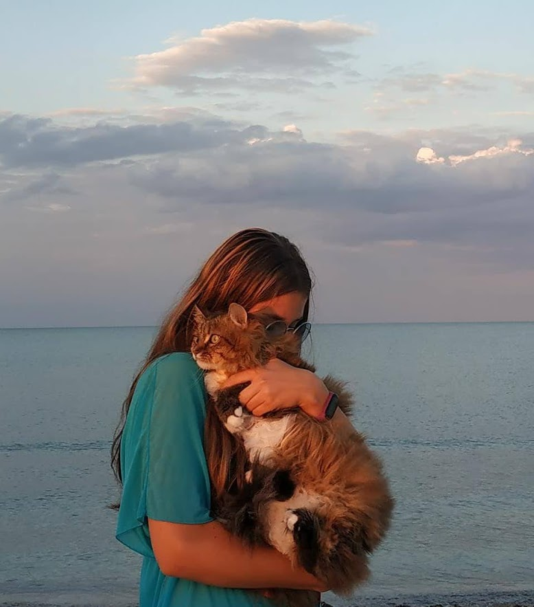

Про себе
Я є досвідченим веб-розробником, який має понад 5 років досвіду у створенні та підтримці веб-додатків та сайтів.
Мій досвід включає роботу з різними мовами програмування, такими як HTML, CSS, JavaScript, PHP та Python,
а також з різними фреймворками та інструментами, такими як React, Angular, Node.js, Django та WordPress.
Я маю відмінні комунікативні навички і готовa працювати в команді, щоб досягти спільної мети. Я маю досвід роботи з клієнтами та знаю,
як слухати та розуміти їхні потреби, а також надавати рішення, які відповідають їхнім бізнес-цілям.
Я завжди прагну до самовдосконалення та навчання нових технологій, щоб поліпшити свої навички та здібності в галузі веб-розробки.
Я орієнтованa на результат і готовa надавати якісний код, який відповідає стандартам якості та безпеки.
Якщо ви шукаєте висококваліфікованого веб-розробника, готового до нових викликів та завдань, я готовa надати свій досвід та навички в цій галузі.
Досвід
Досвід 2021-2023:
Компанія: WebDev
Посада: Фронтенд-розробник
У період з 2021 по 2023 рік я працювала у компанії WebDev. Мої обов'язки включали розробку і підтримку веб-сайтів, використовуючи HTML, CSS та JavaScript.
Я також займалася оптимізацією веб-сторінок для підвищення швидкості завантаження і покращення SEO.
У рамках своєї роботи я брала участь у розробці кросс-браузерних і мобільних сайтів. Крім того, я займалася створенням адаптивних дизайнів для мобільних пристроїв.
Досвід 2018-2021:
Компанія: ABC веб-студія
Посада: Фронтенд-розробник
З 2018 по 2021 рік я працювала у веб-студії ABC. Мої обов'язки включали розробку та підтримку веб-сайтів для клієнтів.
Для цього я використовувала HTML, CSS, JavaScript, а також фреймворки, такі як React і Bootstrap.
Досвід 2016-2018:
Компанія: XYZ IT компанія
Посада: Фронтенд-розробник
У період з 2016 по 2018 рік я працювала у компанії XYZ, де була відповідальним за розробку і підтримку веб-додатків для клієнтів.
У своїй роботі я використовувала HTML, CSS, JavaScript, а також фреймворк Angular та інші фреймворки.
Навички
У моєму арсеналі є різноманітні навички, які я використовую у своїй роботі.
По-перше, я маю досвід роботи з Angular - це потужний фреймворк для розробки веб-додатків.
Я володію знаннями і навичками, щоб створювати ефективні та складні додатки, використовуючи цей фреймворк.
Також у моєму арсеналі є досвід роботи з графічними редакторами, такими як Figma і Sketch.
Ці інструменти дозволяють мені створювати естетичні та функціональні дизайни для веб-сайтів і веб-додатків.
Я можу розробляти інтерфейси користувача, розташування елементів та взаємодію з додатком.
У моєму розпорядженні також є вміння працювати з HTML та CSS, що є основою веб-розробки.
Я можу створювати розмітку сторінок, задавати стилізацію та керувати виглядом елементів.
Знання SQL дозволяють мені взаємодіяти з базами даних, виконувати запити і зберігати інформацію.
Крім того, у моєму розпорядженні є досвід роботи з мовами програмування, такими як C#, C++, TypeScript та JavaScript.
Ці мови дозволяють мені розробляти функціональність веб-додатків, виконувати обчислення, створювати скрипти та взаємодіяти з іншими компонентами системи.
Загалом, мій набір навичок дозволяє мені ефективно працювати над розробкою веб-сайтів та веб-додатків.
Я можу поєднувати розробку функціональності з естетичним дизайном і забезпечувати взаємодію з базами даних.
Мої хобі
За моїми професійними здібностями в розробці веб-сайтів і навичками, пов'язаними з програмуванням і дизайном,
я також маю декілька хобі, які мені дуже надзвичайно подобаються.
Одним з моїх хобі є малювання картин. Я завжди відчуваю неймовірну творчу свободу, коли беру пензель або олівець у руки.
Малювання дозволяє мені виразити свої почуття та передати світ так, як його бачу. Чи то реалістичний портрет, абстрактна композиція або пейзаж,
я завжди насолоджуюся процесом творення власних шедеврів.
Ще одне моє хобі - їзда на роликах. Це спортивне заняття, яке не тільки додає активності моєму життю, а й робить мене сильнішою та здоровішою.
Я люблю відчувати вітер у волоссі, крутитися на роликах і досліджувати нові місця. Це також чудовий спосіб розважитися і розслабитися після напруженого дня роботи.
Кожен раз, коли я вирушаю на прогулянку на роликах, я відчуваю себе вільною і повною енергії.
У своєму вільному часі я насолоджуюся цими хобі і багато чого вчуся. Малювання надає мені можливість розкрити свою творчість та розвивати художні навички, а їзда на роликах покращує мою фізичну форму і допомагає зняти стрес.
Ці хобі доповнюють моє професійне життя, допомагають мені зберігати баланс і надихають на нові ідеї і досягнення.
Контакти
| Telegram | xaxaxaxxaxaxxxxx |
| Gmail | 22.nastia.22.enotik22@gmail.com |
| Номер телефону | Анастасія Ізотова |
| Skype | Nastya |